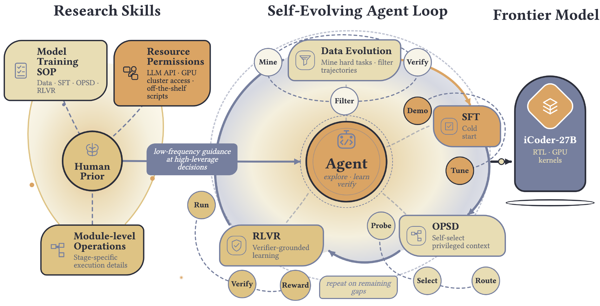
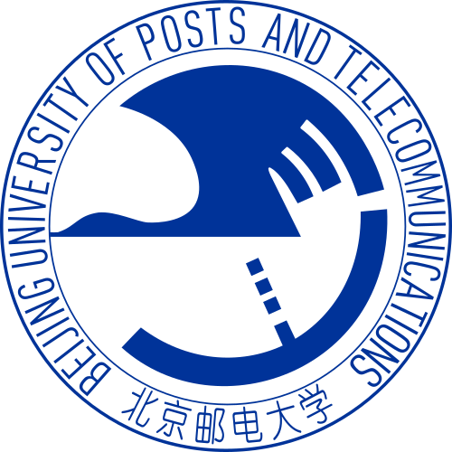

About
I am an undergraduate student at Beijing University of Posts and Telecommunications (BUPT), majoring in Internet of Things Engineering in the BUPT-QM joint program.
My research interests focus on LLM Post-Training, Recursive Self-Improvement, and World Models. Feel free to contact me for collaboration, work opportunities, or just a chat.
In the long run, I hope to build AI systems that can significantly advance real-world productivity, broaden access to knowledge and high-quality work, and contribute to more inclusive social progress.
“Believe in the beauty of life, maintain an optimistic attitude, and know that revolution is always invincible.”
News
- We released iCoder-27B, a frontier-competitive industrial coding model for RTL design and GPU kernel optimization. See the media coverage.
- I hope this section will eventually contain news genuinely worth your attention.
Publications
* equal contribution
Honors & Awards
- China International College Students' Innovation CompetitionNational Gold Award
- Outstanding Volunteer in Flood ReliefHonored by the local Communist Youth League for volunteer service during the 2023 Songhua River flood response.
Education

Beijing University of Posts and TelecommunicationsB.Eng. in Internet of Things Engineering– (Expected)- Queen Mary University of LondonB.Eng. in Internet of Things Engineering– (Expected)
Experience
- Shanghai Jiao Tong UniversityResearch Intern, supervised by Prof. Qibing Ren–
- Westlake UniversityResearch Intern, supervised by Prof. Tao Lin–